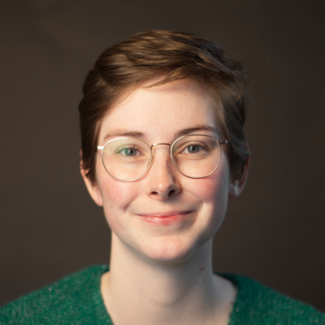
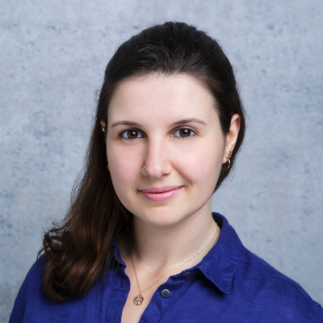
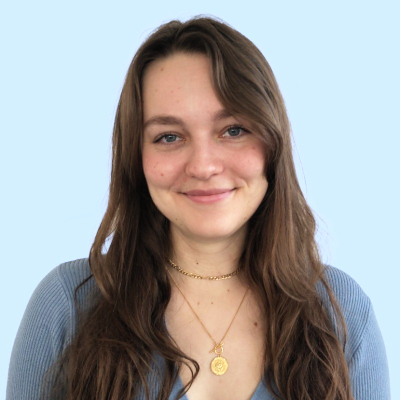
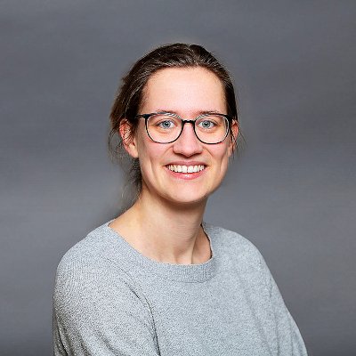
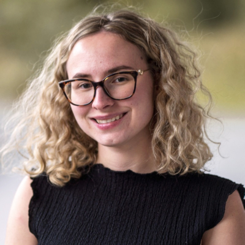
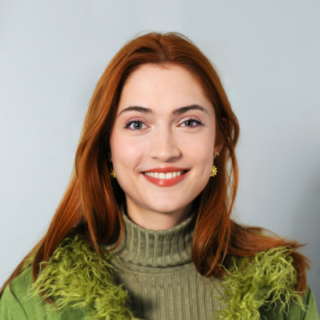
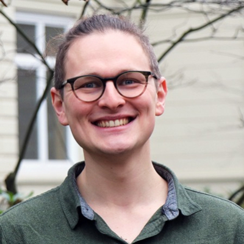
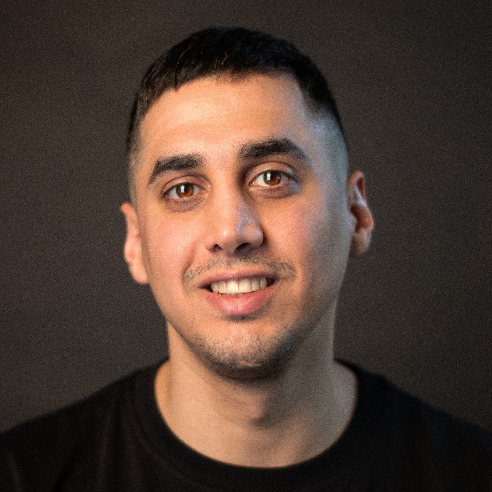
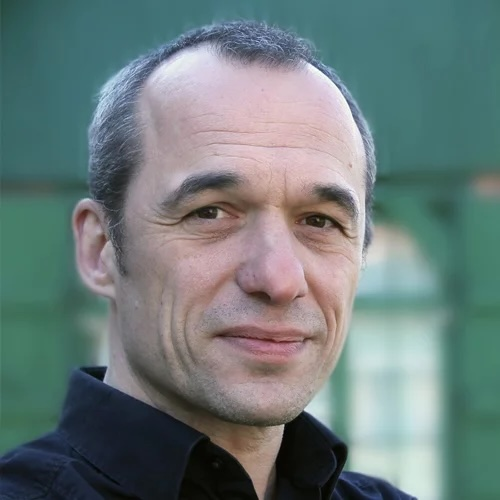

Our Organizers
The organizing committee comprises an interdisciplinary team of researchers bringing together expertise from diverse fields, all researching CUIs, CAs, or ComAI. Our backgrounds span Computer Science, HCI, Linguistics, Media and Communication Studies, Science and Technology Studies, Cultural Anthropology, and Educational Science. The idea for this workshop was developed in the DFG-funded research group ComAI, which many of us are part of.

Laura Spillner
University of BremenLaura is a PhD student at the Digital Media Lab at the University of Bremen. With a background in computer science, her research focuses on the development of explainable AI in the field of language understanding and the interaction between humans and AI in natural language.
Johanna Rockstroh
University of BremenJohanna is a PhD student at the Digital Media Lab at the University of Bremen. As a computational linguist, her research focuses on how LLMs process and produce figurative language, and on evaluating their ability to generate novel and creative linguistic output.


Jule Jensen
University of BremenJule is a PhD student at the University of Bremen and a former user experience designer. She researches how generative AI must be designed to cater to the needs of neurodivergent students in higher education.
Paula Goerke
Institut für Informationsmanagement BremenPaula is a PhD student at the Institute for Information Management in Bremen. She is an educational scientist with a focus on education and media, and is now researching the relationship between AI and data in the context of higher education.


Sara Skardelly
University of GrazSara is a PhD student at the Center for Data Science in Business and Society at the University of Graz. She has a background in Computational Social Systems, and her research explores futures linked to AI in care and health.
Leonie Winterpacht
University of GrazLeonie is a PhD student at the Center for Data Science in Business and Society at the University of Graz. Her background is in Cultural Anthropology, and she is now located in Science and Technology Studies. She is researching the use and appropriation of ComAI by older adults, in terms of health and care.


Jonah Wermter
Leibniz-Institute for Media Research | Hans-Bredow-InstitutJonah is a PhD student at the Leibniz-Institute for Media Research | Hans-Bredow-Institut in Hamburg, and a trained journalist with a background in Statistics and Social Sciences. His research focuses on the impact of ComAI on journalistic autonomy.
Nima Zargham
University of Toronto.Nima is a postdoctoral researcher at the Faculty of Information at the University of Toronto. His research focuses on human-AI communication and collaboration. He has organized workshops at notable HCI conferences (e.g., CHI, CUI, HRI, IUI, and IVA) and serves on the steering committee of the ACM CUI conference series.


Rainer Malaka
University of BremenRainer is Professor for Digital Media at the University of Bremen and the Dean of the Faculty of Mathematics and Computer Science. Within the Center for Computing Technologies he manages the research topic Empowering Digital Media. In addition, he is director of the PhD program Empowering Digital Media, funded by the Klaus Tschira Foundation. His research focus is on multi-modal interaction, language understanding, entertainment computing, and artificial intelligence.